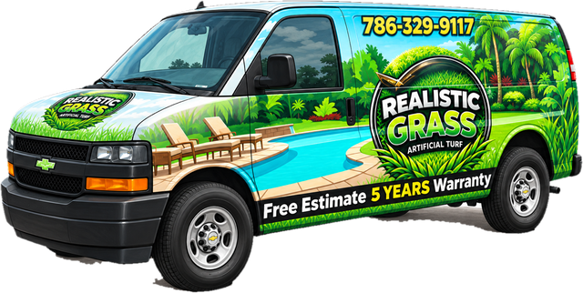

Grama para Jardines
Céspedes suaves, densos y de aspecto natural para jardines delanteros, patios y comunidades con HOA.
Miami · Miami-Dade · Sur de la Florida
Césped sintético premium a precios al por mayor, suministrado e instalado por profesionales. Un jardín verde y frondoso los 365 días del año: sin cortar, sin regar, sin lodo. Hecho para el sol, la lluvia y las mascotas de la Florida.
Precio al por Mayor • Calidad Premium • Sin Mantenimiento • Ecológico • Hecho para Durar
Nuestra Grama
Hojas multitono, fibra de base natural y tecnología de superficie fresca: tan realista que sus vecinos le preguntarán quién le corta el césped. Todos nuestros productos tienen protección UV para el Sur de la Florida y están respaldados por nuestra garantía de 5 años.
Céspedes suaves, densos y de aspecto natural para jardines delanteros, patios y comunidades con HOA.
Base de drenaje total, relleno antimicrobiano y control de olores. Fácil de enjuagar y resistente a las garras.
Greens de calidad profesional con rodado real, bordes y contornos a medida, en su propio patio.
Superficies acolchadas con opciones de amortiguación para caídas. Áreas de juego limpias, seguras y sin lodo.
Residencial y Comercial

Por qué Realistic Grass
Vendemos directo a precios al por mayor e instalamos con nuestro propio equipo: sin intermediarios ni sorpresas de subcontratistas. Desde un área para perros de 200 pies² hasta un proyecto comercial completo, nos encargamos de todo, desde la excavación hasta el cepillado final.
Beneficios
El riego exterior es la factura de agua más alta del Sur de la Florida. La grama artificial no necesita riego.
Sin cortar, abonar, desyerbar ni fumigar. Recupere sus fines de semana.
Sin manchas secas tras la sequía ni lodo tras las tormentas. Perfecta todo el año.
Sin huecos ni patas embarradas. Drena rápido y se limpia con agua.
Sin pesticidas ni fertilizantes que lleguen a la Bahía de Biscayne. Sin cortadoras de gasolina.
El ahorro en agua, mantenimiento y jardinería cubre la inversión con el tiempo.
Cómo Funciona
Llámenos o envíe el formulario. Lo visitamos, medimos y le llevamos muestras.
Elija su grama y el diseño. Reciba una cotización clara a precio de mayorista.
Excavación, malla antimaleza, base compactada, grama sin uniones visibles y relleno.
Un césped perfecto sin mantenimiento, con garantía de 5 años.
Opiniones
“Nuestro patio pasó del lodo a un césped perfecto en dos días. A los perros les encanta y ya nunca regamos.”
“El mejor precio que encontramos en Miami, y el equipo de instalación fue limpio y puntual. Parece grama de verdad.”
“Pusieron grama en el área de la piscina y en la terraza de la azotea. Excelente drenaje incluso con las tormentas de verano.”
Zonas de Servicio
Preguntas Frecuentes
Depende de la grama, del tamaño del área y de la preparación del terreno. Como vendemos a precios al por mayor, nuestras cotizaciones están entre las más competitivas de Miami. Llame al (786) 329-9117 para un estimado gratis.
Una grama de calidad dura más de 15 años con un uso normal. Nuestras instalaciones tienen una garantía de 5 años.
Toda grama se calienta bajo el sol directo. Ofrecemos fibras y rellenos que reducen la temperatura de la superficie, y un enjuague rápido la refresca al instante.
Sí. Nuestra grama no contiene plomo y no es tóxica. La grama para mascotas tiene una base totalmente permeable y relleno antimicrobiano para controlar los olores.
El agua drena directamente a través de la base perforada y del suelo compactado: sin charcos ni lodo.
La mayoría de los jardines residenciales se terminan en 1 a 3 días.
Sí. Vendemos rollos a precios al por mayor a propietarios, jardineros y contratistas.
 Más información
Más información